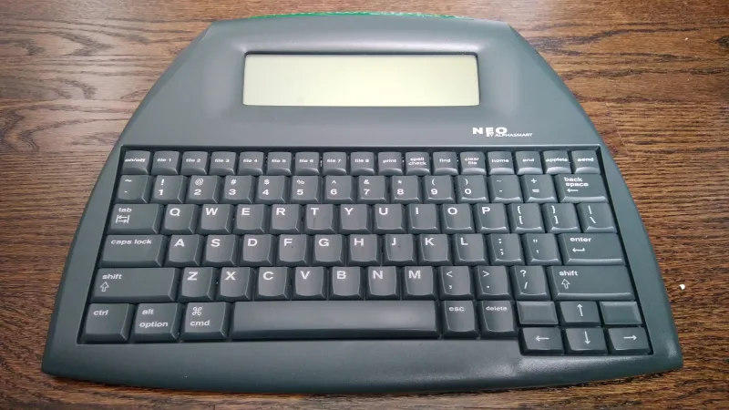

Writing and other creative projects that I'm working on
This is where I'll talk about my writing projects.
What I use to write
I bought an old typing teaching tool called the AlphaSmart Neo 2 from ebay in order to get more distraction-free
writing done.

It allows you to write plain text files directly to memory, and can store up to 8 different files. When you're ready to upload your work to your computer to edit it, it uses a USB-A to USB-B connection to emulate a keyboard and types it directly onto whatever file you have open. I typically transfer it directly into a Google Doc so that I know that the information is then saved automatically.
I've got some idas kicking around my head about short stories, but I find it incredibly difficult to write in a manner that eschews humor for sincerity. I often find myself falling back on making jokes or being flippant. Thats okay sometimes, but I find that it's a hard habit to break when the story calls on me to. The tone I'm looking for is approximately Vonnegut-esque, and yes, I realize how incredibly annoying that sounds, but alas, I am what I am.